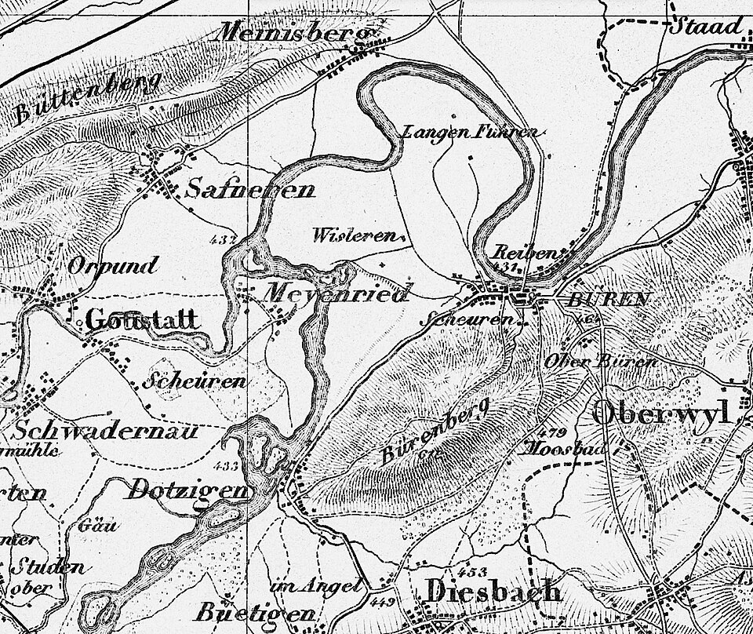
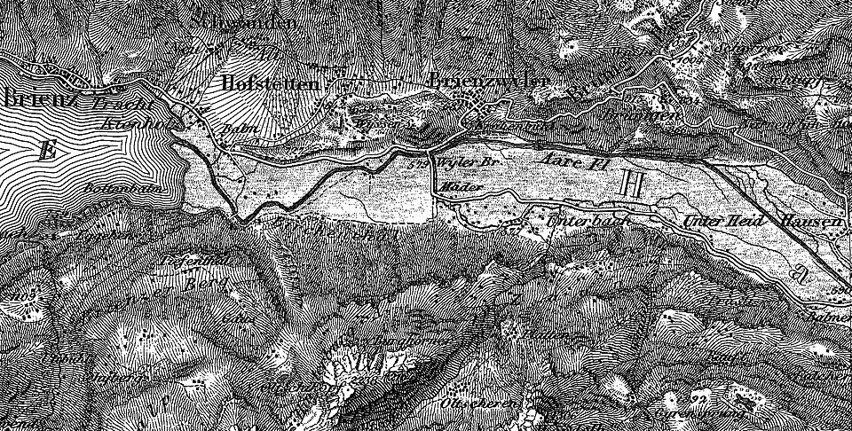

THE WORLD DOES NOT FIT THROUGH THE MOUTH
The world is full of more than I can say. This is what crossed.
ENTER A WORLD

How physical terrain passes through human mouths, marks, and systems of coordination.
The physical world sprawling in raw sensory resolution: wolf tracks in the switchgrass, mud temperature, wind velocity, and unmeasured friction.
The irreducible friction that resists flattery. Soil that refuses to obey the manifesto, isotopes in the bones, and tools that rust.
Selecting which single relation will travel while dropping ninety-nine percent of the terrain. Description travels only by what it leaves behind.
Transforming human bodily encounters into portable nouns, legal clauses, coordinate maps, database schemas, and model token weights.
The microscopic trace traveling across centuries and borders to direct armies, build cathedrals, or crash financial markets.
Physical residues that anchor symbolic claims to material reality.
Six wet commas in the switchgrass that redirected a child's trajectory over the pass before speech began.
The root of deixis. Whoever captures joint attention owns the interpretive horizon of the room.
A working tool remains phenomenologically transparent; only when the steel fractures do we notice the tool.
Strontium ratios in the enamel that remember where the body actually drank, indifferent to the passport.
102 Defined Operational Invariants and Theoretical Lineages (Zero Placeholders).
A Field Treatise on the Epistemic Tragedy of Description.
Human beings survive by converting vast physical realities into compact, portable tokens. A sentence keeps the wolf and drops the wind direction; keeps the danger and drops ten thousand blades of grass.
The catastrophe begins when institutions forget that the sign was cut. They mistreat the dashboard for the territory, the legal definition for the human grief, and the database schema for the landscape.
"The world does not fit through the mouth. The world is full of more than I can say. This is what crossed."